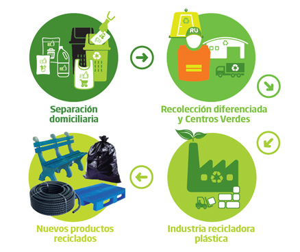
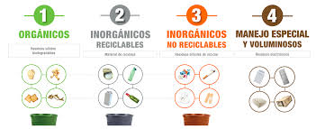
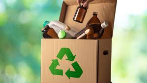
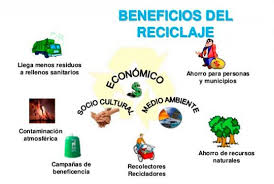

COLEGIO DE ESTUDIOS CIENTIFICOS Y TECNOLOGICOS DEL ESTADO DE OAXACA

Etapas detalladas del proceso de reciclaje:
1.Separación en casa:
En casa, se separan los residuos según su tipo (plástico, papel, cartón, vidrio, etc.).
Se depositan en contenedores de colores específicos o bolsas de reciclaje.
Esto facilita la posterior clasificación y tratamiento de los materiales.

2.Recolección y transporte:
Los residuos separados se recolectan por los servicios de limpieza pública.
Se transportan a plantas de tratamiento o clasificación.

3.Clasificación y procesamiento:
En las plantas de tratamiento, los residuos se clasifican según su tipo de material.
Se eliminan impurezas y se preparan para el proceso de reciclaje.

4. Reciclaje:
Los materiales reciclables se someten a diferentes procesos según su tipo.
El plástico se puede triturar y volver a moldear, el papel se desintegra en fibras y se mezcla con agua, y el vidrio se funde y se moldea.

5. Fabricación de nuevos productos:
Los materiales reciclados se utilizan para fabricar nuevos productos, como envases, muebles, ropa, etc.
De esta manera, se cierra el ciclo de vida de los materiales y se reduce la necesidad de extraer nuevas materias primas.

Video del reciclaje
Alumna:ESMERALDA JAZMIN MORALES MURAD
Grupo:602
29 de Mayo 2025